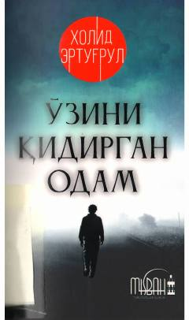

OQImon izlab zulmatdan nurga chiqqan insonlar haqida hayotiy hikoyalar.
Bu kitob Xolid Erto'g'rulning hayotiy voqealar asosida yozilgan asari bo'lib, 25 tilga tarjima qilingan va 1 500 000 nusxada sotilgan. Asar zulmatdan nurga — ya'ni imonni topish yo'lidagi insoniy izlanishlarni tasvirlaydi. Muallif sodda tilda yozib, ayniqsa yoshlar ma'naviyatini boyitishni asosiy maqsad qilib olgan.